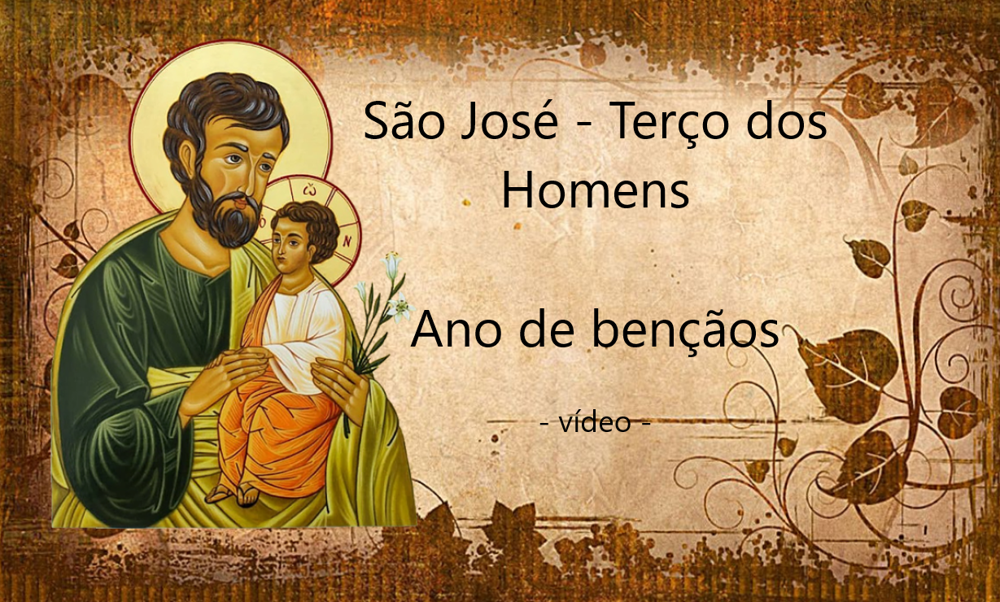

Comunidade Santa Gemma
Terço dos Homens
Hino
Ó mãe e rainha do santo rosário
Mãe admirável, mãe do santuário
O mundo sem fé na dor se consome
Ajuda esse mundo com o terço dos homens
No teu santuário, que é fonte e berço
Nasceu a missão dos homens do terço
O primeiro homem, um santo varão
Como o bem amado, se chama João
Ó mãe e rainha do santo rosário
Mãe admirável, mãe do santuário
O mundo sem fé na dor se consome
Ajuda esse mundo com o terço dos homens
O terço é presente de tua ternura
As mãos que o levam são nossas, são duras
O homem rezando se torna menino
Que pode mudar do mundo o destino
Ó mãe e rainha do santo rosário
Mãe admirável, mãe do santuário
O mundo sem fé na dor se consome
Ajuda esse mundo com o terço dos homens
O terço tem contas e é meditado
Mas tu, mãe, não contas o nosso pecado
Convidas a todos, o terço é do povo
Só queres que o homem seja homem novo
Ó mãe e rainha do santo rosário
Mãe admirável, mãe do santuário
O mundo sem fé na dor se consome
Ajuda esse mundo com o terço dos homens
É tua escola, o terço ele é luz
Ninguém como tu sabe mais de Jesus
No santo evangelho ensina de novo
Teu terço é bíblia que Deus deu ao povo
Ó mãe e rainha do santo rosário
Mãe admirável, mãe do santuário
O mundo sem fé na dor se consome
Ajuda esse mundo com o terço dos homens
Nas Ave Marias que aqui repetimos
Falamos do amor que por ti sentimos
Com o terço na mão em santas vigílias
Rezamos unidos às nossas famílias
Ó mãe e rainha do santo rosário
Mãe admirável, mãe do santuário
O mundo sem fé na dor se consome
Ajuda esse mundo com o terço dos homens
